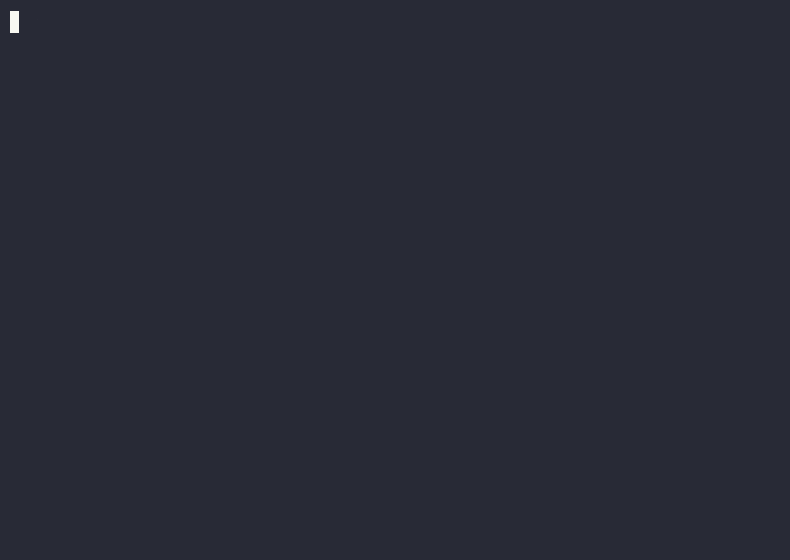

AgentWatch はあなたのAIエージェントの動作・コスト・API呼び出し履歴をリアルタイムで可視化するローカルCLIダッシュボード。エージェントの挙動を完全に把握してください。

エージェントは便利ですが、何をしているかが見えないことが多いです。AgentWatch がそれを変えます。
エージェントのすべてのAPI呼び出しを0.5秒以内にキャプチャ、WebSocketで即座にダッシュボードへ反映します。
OpenAI・Anthropicの最新料金テーブルに基づきトークン単価を自動計算。累計コストをリアルタイムで把握。
設定した閾値を超えたらターミナルに即座に通知。Slack webhookにも対応。暴走エージェントを止める。
複数エージェントを同時監視。どのエージェントがいつ・どのモデルで・いくら消費したかを一覧で確認。
プロキシも実ダッシュボードもlocalhost上で動作。ログは ~/.agentwatch/logs.db に保存。外部サーバー不要。
OpenAI・Anthropic・Ollamaをenv変数1行で切り替え。既存エージェントのコード変更ゼロで導入可能。
AgentWatch はAPIエンドポイントとエージェントの間に入る透過プロキシ。エージェントの動作は一切変えません。
エージェントのAPIリクエストをそのまま転送しつつ、レスポンスからトークン数・モデル・レイテンスを抽出してDBへ記録。
OpenAI・Anthropicの公式料金テーブルを内蔵。入力・出力トークンから自動で$コストを算出します。
FastAPI + WebSocketで1秒ごとにブラウザへプッシュ。複数エージェントの状況をリアルタイムで表示。
既存エージェントのコードを一切変更せず、環境変数を設定するだけで監視開始。
Python 3.10 以上が必要です。
使用するAPIプロバイダーに応じた環境変数を確認します。
ダッシュボードが http://localhost:7070 で自動オープンします。
シンプルなコマンド体系。
| コマンド | 説明 |
|---|---|
| agentwatch.py watch | プロキシ（ライブログ）ダッシュボードを起動 |
| agentwatch.py watch --alert-cost 0.05 | コスト閾値を$0.05に設定してアラートを受け取る |
| agentwatch.py watch --no-dashboard | Webダッシュボードなしでターミナルのみ監視 |
| agentwatch.py status | セッション累計（アクション数・トークン・コスト）を表示 |
| agentwatch.py export output.json | 全ログをJSONにエクスポート |
| agentwatch.py clear | すべてのログを削除 |
| agentwatch.py config | プロキシ設定の環境変数を表示 |